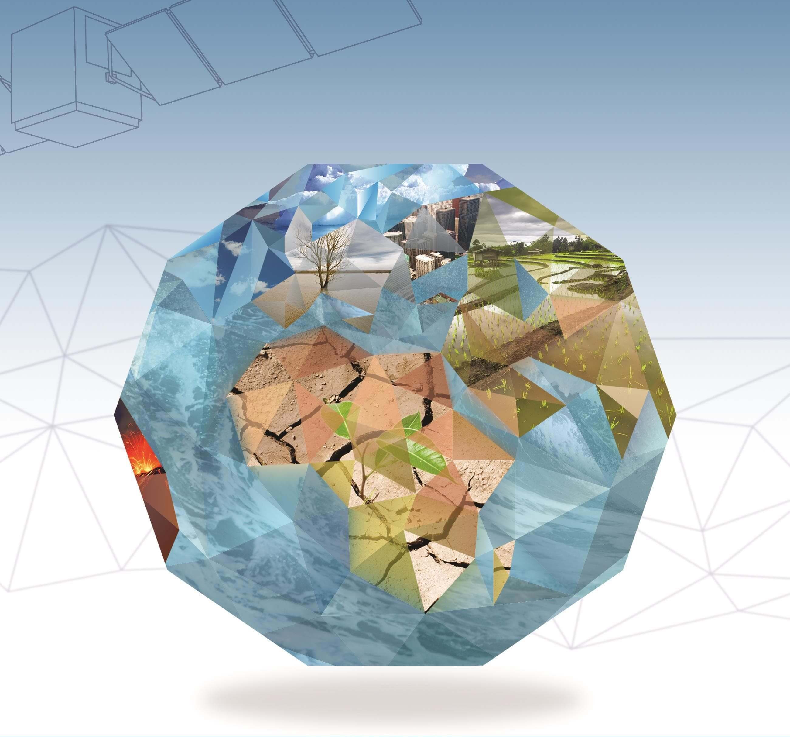

<div class="pages">
  <div data-page="videos" class="page no-toolbar no-navbar">
    <div class="page-content">
    	<div class="navbarpages">
    		<div class="navbar_left">
    			<div class="logo_text"><a href="index.html"><span>Space</span>UP</a></div>
    		</div>			
    		<a href="#" data-panel="left" class="open-panel">
    			<div class="manu-icon"></div>
    		</a>					
    	</div>
      <div id="pages_maincontent">
        <h2 class="page_title">Future projects</h2>

        <div class="page_single layout_fullwidth_padding">
          <h4 style="text-align: center;">ESA.INT</h4>
          <p style="text-align: center;">Call for Earth explorer 9 proposals</p>
          <p>Scientists involved in Earth observation have another opportunity to submit a proposal for ESA’s next Earth Explorer satellite mission.</p>
          
          <p>Earth Explorer missions are launched to provide a stream of measurements to explore and understand different aspects of the Earth system, and demonstrate new space technologies.</p>
          <p>Earth Explorer missions form the science and research element of ESA's Living Planet Programme and focus on the atmosphere, biosphere, hydrosphere, cryosphere and Earth's interior.</p>
          <p>So far, eight missions have been selected for implementation. Each was proposed by the scientific community and realised through a user-driven selection process to ensure that each missions address key Earth-science questions.</p>
          <h5><a href="http://www.esa.int/Our_Activities/Observing_the_Earth/Reissued_call_for_Earth_Explorer_9_proposals">Read more</h5>
          <p>Source:http://www.esa.int/ESA</p><hr>
        </div>
      </div>
    </div>
  </div>
</div>